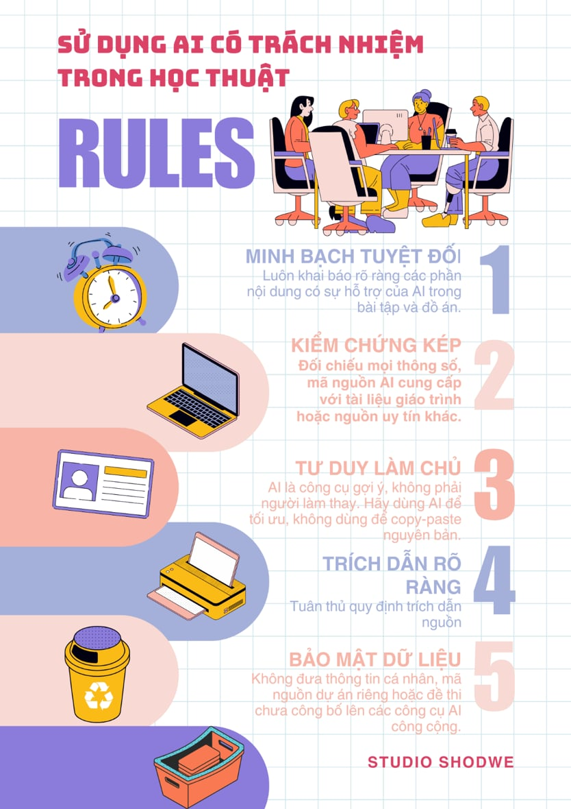

Trong giai đoạn 2024-2026, Đại học Quốc gia Hà Nội đã xác định trí tuệ nhân tạo là công cụ chiến lược để nâng cao chất lượng đào tạo. Theo thông tin từ cổng thông tin vnu.edu.vn, VNU đã tiên phong đưa học phần "Nhập môn công nghệ số và ứng dụng trí tuệ nhân tạo" (VNU1001) vào chương trình bắt buộc. Điều này cho thấy thái độ cởi mở nhưng thận trọng của nhà trường: Không cấm đoán, nhưng yêu cầu có kiểm soát.
Đối với một đơn vị trọng điểm về kỹ thuật như UET, các quy định về AI thường được lồng ghép trong quy chế đào tạo và liêm chính học thuật:
Chính sách hiện tại của VNU và UET rất phù hợp với định hướng phát triển của một sinh viên Công nghệ Thông tin:
| Tên thiết bị | Phân loại | Thông số quan trọng | Lưu ý khi sử dụng |
|---|---|---|---|
| Bàn phím | Nhập | Loại Switch (Cơ/Quang), Layout, Key Rollover (NKRO), Polling Rate. | Chọn switch phù hợp với môi trường (tránh dùng Blue Switch tại văn phòng/thư viện vì tiếng ồn lớn). |
| Chuột | Nhập | DPI (Độ nhạy), IPS (Tốc độ theo dõi), Trọng lượng (gram), Loại cảm biến. | Vệ sinh mắt đọc thường xuyên; sử dụng tấm lót chuột (mousepad) chất lượng ổn định. |
| Màn hình | Xuất | Kích thước, Độ phân giải, Tần số quét (Refresh Rate), Loại tấm nền (OLED/Mini-LED/IPS), Chuẩn kết nối hiện đại. | Cân chỉnh màu sắc định kỳ nếu làm đồ họa; chú ý hiện tượng burn-in hoen ố nếu dùng màn hình OLED. |
| Máy in | Xuất | Tốc độ in (PPM), Độ phân giải (DPI), Chuẩn kết nối (Wi-Fi/USB), Loại mực. | Sử dụng giấy đúng định lượng quy định, bảo dưỡng linh kiện trống in định kỳ để tránh kẹt giấy. |
Đánh giá đầu ra của AI: Ở Prompt 1, AI đưa ra kiến thức khá tổng quát. Đến Prompt 2, khi tôi yêu cầu cụ thể về thông số kỹ thuật, AI đã cung cấp các thuật ngữ chuyên sâu như DPI hay IPS, giúp tài liệu mang tính học thuật hơn.
Chỉnh sửa và tích hợp: Tôi đã phát hiện AI liệt kê một số chuẩn kết nối cũ (như VGA). Tôi đã chủ động lược bỏ và thay thế bằng các chuẩn hiện đại như HDMI 2.1 và DisplayPort 1.4 để phù hợp với thực tế công nghệ năm 2026.
Trích dẫn minh bạch: Tài liệu được tổng hợp với sự hỗ trợ của AI (Gemini) trong việc hệ thống hóa kiến thức và tra cứu thông số. Nội dung đã được kiểm chứng và biên tập lại bởi sinh viên.
Trong môi trường đại học, đặc biệt là tại UET, ranh giới này nằm ở tư duy chủ động.
Hỗ trợ hợp lý: Sử dụng AI để giải thích một đoạn code khó, gợi ý cấu trúc bài viết hoặc sửa lỗi chính tả/ngữ pháp. Ở đây, sinh viên vẫn là người làm chủ nội dung.
Gian lận: Yêu cầu AI làm toàn bộ bài tập và nộp kết quả đó mà không hiểu nội dung bên trong. Điều này triệt tiêu khả năng tự học và vi phạm nghiêm trọng liêm chính học thuật.
AI tạo ra nội dung dựa trên việc tổng hợp hàng tỷ dữ liệu từ internet, điều này dẫn đến nguy cơ xâm phạm bản quyền nếu không cẩn thận. Việc trích dẫn AI không chỉ là để báo cáo công cụ, mà còn là cách để khẳng định phần nào là "ý tưởng của máy" và phần nào là "sáng tạo của người". Tại UET, việc không trích dẫn nguồn hỗ trợ từ AI có thể bị coi là hành vi đạo văn kỹ thuật số.
Tích cực: AI giúp sinh viên IT nhanh chóng tiếp cận công nghệ mới, giảm bớt các công việc lặp đi lặp lại để tập trung vào tư duy thuật toán cao cấp.
Tiêu cực: Nếu quá lệ thuộc, sinh viên sẽ mất đi khả năng giải quyết vấn đề độc lập (problem-solving) và kỹ năng tra cứu tài liệu truyền thống. Khi đối mặt với các kỳ thi trực tiếp không có AI, sinh viên sẽ dễ dàng rơi vào trạng thái mất phương hướng.
